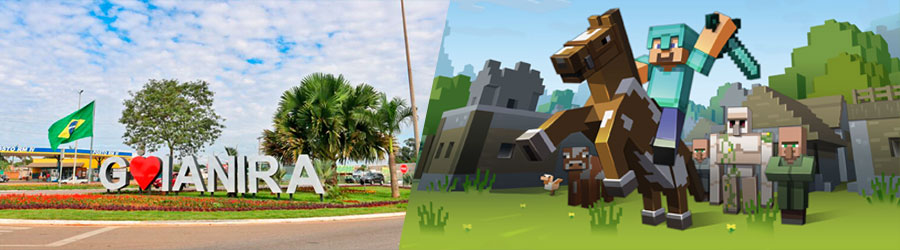

GOIÂNIA
I was born in Goiânia, the capital of the State of Goiás, in Brazil, and grew up there, spending most of my childhood and early adolescence.

GOIANIRA AND MINECRAFT
At the age of 12 I moved to the city of Goianira, where I got my first computer and, since then, I started to venture into online games. At just 14 years old, I was already programming macros on a Minecraft server using Java, just for fun with friends.
ADULT LIFE HAS ARRIVED
The time of adulthood arrived and I realized that the hours of fun in front of the computer with my friends were no longer so frequent. I knew I was facing a new stage in my life and had already decided that I wanted to work with technology. It was at that moment that I started to study the C language.
I BECAME A PROFESSIONAL
In 2021, I started my professional journey at Globaltec, in Aparecida de Goiânia, acting as a Backend Software Engineer. I was intensely dedicated to coding during the day and studying at night for the entire period of one year.
CAREER TAKING OFF
The following year, in 2022, I received an invitation to work at GVDasa, a renowned company in the educational field, located in the south of Brazil, assuming the position of Mobile Software Engineer. During that same year, I received an appointment to work at an educational company in my hometown, where I faced a new challenge: creating a completely new product!